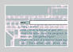

Susan Collins shows widely in UK and internationally. She is currently Head of the Centre for Electronic Media in Fine Art at the Slade School of Art, London. For more information about her work visit her web site.